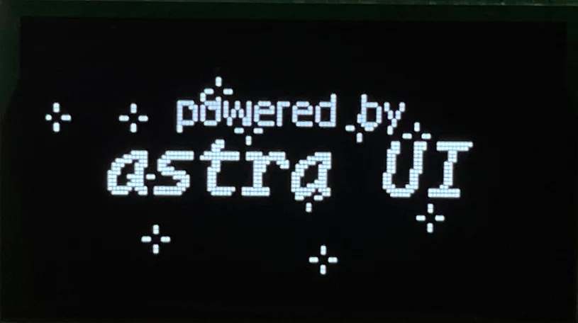

INDEPENDENT PRACTICE / WoooLAB
HARDWARE & SOFTWARE
AstraThreshold.
张恒/无理造物 WoooLAB
电子硬件、嵌入式系统
与开源开发。
在电路与代码之间工作。从一块电路板到一套交互框架，关注系统如何设计、实现，并在真实硬件上运行。
香港科技大学（广州）· ROAS 博士生
强脑科技 BrainCo · 电子硬件工程师（实习）

电路设计 / 固件开发 / 人机交互GITHUB / AstraThreshold
01 / SELECTED WORK
让作品说话。
开源软件、开发工具与硬件。
从个人需求出发，向社区开放。

04 / DESIGN TOOLS
仓库数据核对于 2026.11，实时数据以 GitHub 为准。
全部开源项目02 / ABOUT
从原理出发，
在实践中理解。
AstraThreshold / 张恒
我是张恒，也以 AstraThreshold 和「无理造物 WoooLAB」的名字分享作品。目前在香港科技大学（广州）机器人与自主系统（ROAS）专业攻读博士，并在强脑科技担任电子硬件工程师实习生。
我的主要实践围绕电子硬件、嵌入式系统与控制展开：设计电路和 PCB，编写底层固件，再将它们连接成可以实际使用的系统。我也持续探索相机、成像与光学，把对摄影的兴趣延伸到设备本身。
开源与分享是这段实践的一部分。我在 GitHub 维护项目，也在哔哩哔哩记录制作过程、技术细节和经验。
HARDWARE
电子硬件设计
原理图 · PCB Layout · 电源与驱动
FIRMWARE
嵌入式系统
STM32 · C / C++ · HMI
EXPLORATION
相机与成像
光机电系统 · 取景交互 · 原型开发
CURRENT EXPLORATION
AstraView
相机、光学与嵌入式系统的交汇。
在研项目 / In development
围绕即时成像相机展开的个人项目，探索光学取景、信息叠加与电子控制的结合。目前持续推进光路、机械结构和显示驱动的设计与验证。
从系统约束到原型，让硬件、光路与交互逐步协同。
03 / EXPERIENCE
持续积累，向前探索。
香港科技大学（广州）
机器人与自主系统（ROAS）· 博士研究生
强脑科技 BrainCo
电子硬件工程师 · 实习
北京工业大学
机器人工程 · 本科
机器人教育与竞赛指导
RoboMaster、VEX、嵌入式创意项目与编程教学
04 / GET IN TOUCH
交流，从这里开始。
关于硬件、开源项目，或一个值得动手的想法。